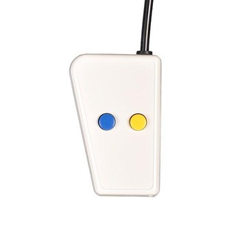

Cognitive and computational models of reward‑guided learning and decision‑making
Advanced Lab · Session 1 of 4
Organisers: Dr Jan Grohn · Dr Miriam Klein-Flügge
Department of Experimental Psychology, University of Oxford
Plan for the next 4 weeks
Week 1 today
Python and Colab basics
Experience the task
Build a learning model
Understand its parameters
Week 2
Model fitting
Parameter recovery
Simulating data from the model
Week 3
Checking data quality
Data analysis
Model comparison
Week 4
Statistics
Write-up planning
Why build a model?
Discuss with each other
What models have you come across in your course so far?
What has modelling taught us about behaviour?
What has modelling taught us about the brain?
What practical uses might computational models of cognition have?
Why build a model?
To make inferences about latent causes of behaviour that we cannot observe directly
To get closer to a simplified form of people's cognitive processes
Because we want to infer latent variables and mechanisms
To say something about the computations involved in completing a task
To infer what is really happening inside the black box
To create order in the universe
Models let us ask questions that are hard to answer with experiments
To quantify evidence for our theories and hypotheses
Courtesy of Wei Ji Ma's lab, NYU
What does computational modelling usually entail?
Understand some simple maths behind the model (GCSE level)
Understand what the parameters and variables in the model mean
Marr's three levels
Computational theory. What is the goal of the computation? Why is it
appropriate, and what is the logic of the strategy by which it can be carried out?
Algorithm. How can this computational theory be implemented? What is the
representation for the input and output, and what is the algorithm for the transformation?
Hardware implementation. How can the representation and algorithm be
realised physically?
Marr & Poggio, Vision, 1982
An example for Marr's three levels of explanation
Computation The goal of a cash register is to do
arithmetic, so we need a theory of addition, subtraction, and so on.
Algorithm
It uses Arabic numerals, not Roman ones — so algorithms for addition that operate on
Arabic numerals: add the last digit first, carry if the sum exceeds 9, and so on.
Even if the computational goal is
the same, the algorithm can be very different.
Implementation
The cash register may be mechanical, with each number a notch on a circular wheel, or
electrical, with binary numbers stored in the wires and transistors of a circuit.
Even if the algorithm is the same,
the implementation can be very different.
What we're aiming to model
How do we learn across time which stimulus is more likely to be rewarded?
How do we decide between different options?
Behrens et al., Nature Neuroscience, 2007
What measurements do we obtain from participants in our task?

Reaction times, in milliseconds
Which option was chosen, left or right
Problem. Reaction time and choice data cannot tell us how fast participants
learn, or how much they weigh reward magnitude against probability.
Why learn to code?
Building models often needs you to code them up…
Discuss with each other
How will it help you if you want to do research?
How will it help you if you want to pursue other careers?
Aims for today
Learn about the task you'll be running in this Advanced Lab, and practise by playing
the task yourself (30–45 mins)
Break (5–10 minutes)
Build a simple reinforcement learning model of the task, and understand how varying
parameters in the model affects its behaviour (~1.5 hours)
Instructing and testing a participant
Discuss with each other
What creates a good environment for testing?
What kind of questions might you ask a participant to probe their task understanding?
Task demo
See the link in Section 2 of the Colab notebook, or go straight there:
Pick either condition. You will play the other one afterwards if there is time.
Task practice
Normally, when we test participants, we first inform them about the goal of the study and
take their informed consent.
Discuss
Should we counterbalance the volatile and stable blocks?
5–10 minutes
Break
Last part for today: the RL model
Just follow the Colab notebook, and ask us questions any time.
What are our research questions?
How do we learn, over time, which choices are more rewarding?
How do we decide between different choice options?
Task recap
Points are redrawn at random every trial; which option pays out has to be learnt. The first
six trials are stable, after which the contingency starts reversing.
The two conditions you played
Condition 1
stable
the contingency never moves
Condition 2
volatile
it reverses every 25 trials
Recap of the reinforcement learning (RL) model
Reinforcement learning models track the probabilities of different outcomes when different
actions are taken. In this task we need to estimate the probability that
green is rewarded on each trial — the same as 1 minus the
probability that orange will be, so we only need to track one
probability. We can learn it by calculating a prediction error on each trial:
where $\delta_t$ is the prediction error on trial $t$, $o_t$ the outcome
(1 if green was rewarded, 0 if orange was) and $p_t$ the current probability that green will
be rewarded. We then use this prediction error to update our expectation:
where $\alpha$ is the learning rate, with $0 < \alpha \le 1$.
The learning rate captures the speed of learning
By comparing the speed of learning ($\alpha$) in the
volatile and the stable phase, we can test our first hypothesis: how fast we learn and adjust
our behaviour depends on how quickly the environment is changing.
Expanding the model: integrating probabilities with magnitudes
How should the model combine what it has learnt with what it is
shown?